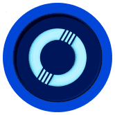

Oceans Finance 什么是海洋金融？ 多链自动质押和自动复合 DEFI 3.0 协议 Oceans Finance提供了一种分散的金融资产，通过使用其独特的协议，以可持续的固定复利模型奖励用户
 OceanSwap 通往去中心化金融运动的门户。掌控您的财务状况，赢取闪亮的 ODEX 奖励。了解有关 ODEX Finance 的更多信息。 我们的目标是让DeFi变得简单，并达到数十亿美元。 低
Official Dormant Dragons 什么是Official Dormant Dragons？ 由SMOKE令牌控制的P2E生态系统，由5000个Dragon NFT的创世集合生成。 《休眠的龙》最初
Ola finance 什么是Ola Finance？ 一个去中心化的协议可编程贷款。 Ola Financial Services Private Limited是一家私人公司，成立于2007年2月24日。它被归类为非政府
Neptune Mutual Neptune Mutual 为您提供有保障的稳定币流动性，通过对冲可能的资本风险和智能合约漏洞来降低您的风险敞口。 Neptune Mutual 平台探索在区块链上创建以用户为中心的对冲产品的
Doge Pound Puppies 来自 The Doge Pound 的创造者来自 Doge Pound Puppies。他们很可爱，很可爱，也准备登月了！收集自己一个成年人和一只小狗，在路上你可能会解锁一些特别的东西！
Doge Raca DOCA 是最好的 MEMECOIN 向 MARS 提供的独特功能：Memecoin - DeFi - GameFi -对于每种加密货币，CoinMarketCap 提供了一个购买选项列表（也称为市场对）